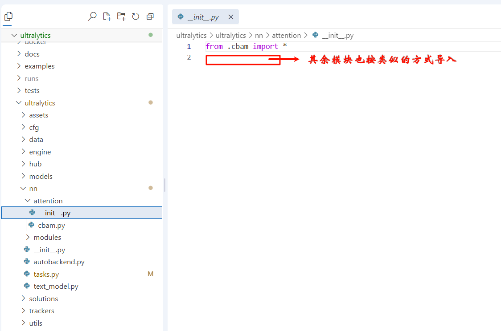
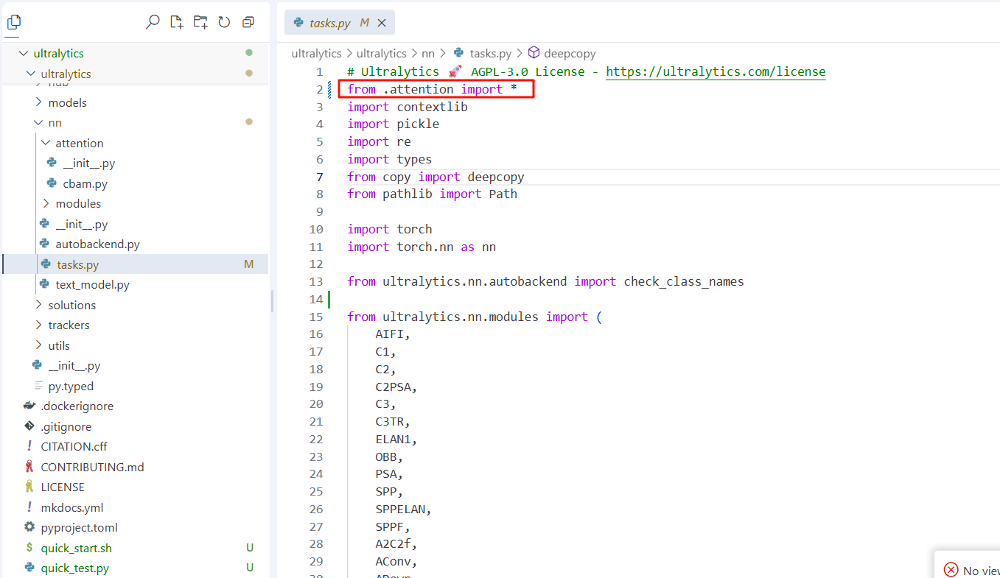
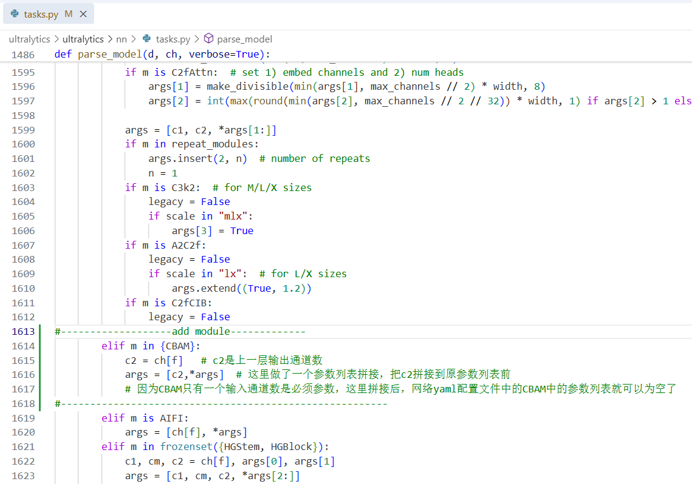
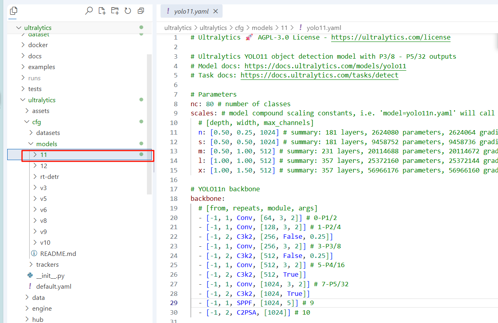
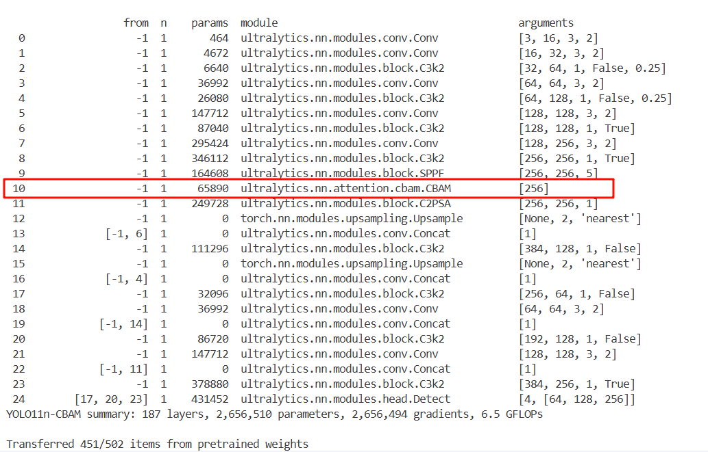

YOLO引入注意力模块
这里对自己简单的修改YOLO网络做一个记录，YOLO这个框架非常成熟（修改yolov8、v9、v11等等都是相同的方法），进行这种即插即用模块的修改非常简单，下面我会以非常典型的CBAM模块为例子。
一、注意力模块
CBAM模块网上介绍的博客非常多，这里我不再赘述。源码如下，要明白的是这个模块不会改变通道数，可以理解为只矫正所学特征。所以才被归为即插即用的模块。另外需要注意这里有个输入通道的参数需要指定，要根据插入到YOLO网络位置修改。
1 | import torch |
二、添加方式
2.1 模块源码实现
在ultralytics/nn文件路径下，新建attention文件夹，用来存放我们需要添加的所有注意力模块的源码。然后新建一个CBAM.py，把上面CBAM的源码实现copy进去。还需要新建一个\init.py来解决导包时相对路径等等的问题

2.2 将模块导入到task文件中
在ultralytics/nn文件夹下的task.py中，首先导入attention文件夹下所有的模块

直接在task.py中Ctrl+F搜索parse，找到parse_model这个函数，在elif m is AIFI这条语句之前，添加要导入的模块，在这个字典里面把你要插入的模块都添加进去，用逗号分割，比如{CBAM, SE, GAM}，我这里作为演示就只添加了CBAM（注释配合后面的修改网络yaml才能看懂，回过头来再看）。

2.3 修改YOLOv11网络配置文件
YOLO这个框架比较成熟，修改YOLOv8、v9、v10，v11等等都是就修改对应的配置文件即可，这里以YOLOv11为例，我这里是做目标检测，所以直接复制ultralytics/cfg/models/11中的yolo11.yaml文件，重命名为yolo11n-CBAM.yaml。命名需要注意模型的型号n、s、m不要漏，我们都知道YOLO有n、s、m、l，x五个大小型号的网络，而我们修改网络结构后，再通过yaml文件加载网络结构时，模型大小会根据文件名中的型号来确定，我这里是在yolo11n最小的模型上插入CBAM进行实验， 所以这里命名为yolo11n-CBAM.yaml。

接下来就是正式修改网络配置文件，这里有两种常见的插入注意力的方法，一是插入到backbone特征提取结束的SPPF层后，另一种是插入到Detect检测头前进行再次矫正。 怎么修改这个网络呢？首先要读懂每一列的意思，第一列表示从哪里连接过来（如果是-1表示上一层)，第三列是模块名称，第二列是这个模块的个数，第四列是这个模块的参数列表，所以如果我们在某一层嵌入一个模块后，就必须修改后续层的第一列的层号，否则就会网络的连接就乱套了，以第一种插入到SPPF后为例，CBAM模块是插入到第10层，from这一列往下检查原本在第10层及其后的层号都需要加1，比如某层本来是concat其上一层和13层做特征融合，就要修改为连接其上一层和14层，以此类推，原来修改后的yaml文件如下：
1 | # Ultralytics 🚀 AGPL-3.0 License - https://ultralytics.com/license |
另一种是插入到Detect检测头前进行再次矫正，就留给大家自己思考和动手操作了，只要明白了上面的例子，就可以开始各种魔改网络了。
2.4 加载修改后的网络并训练（可选加载预训练权重）
主要是想说一下，即使修改后也可以加载原先的预训练权重，之前更新到yolov8的时候要实现加载预训练权重还是有点小麻烦，现在框架可以直接load预训练权重，不适配的层会直接跳过。
1 | import os |
从打印的网络结构看，修改成功（可能有同学会疑问为什么这里打印出来是256，而上面的配置文件是1024，其实是因为这是yolo11n，width缩放比例为0.25！）左下角的Transferred 451/502说明是在加载预训练权重，不适配的层会自动跳过的。
